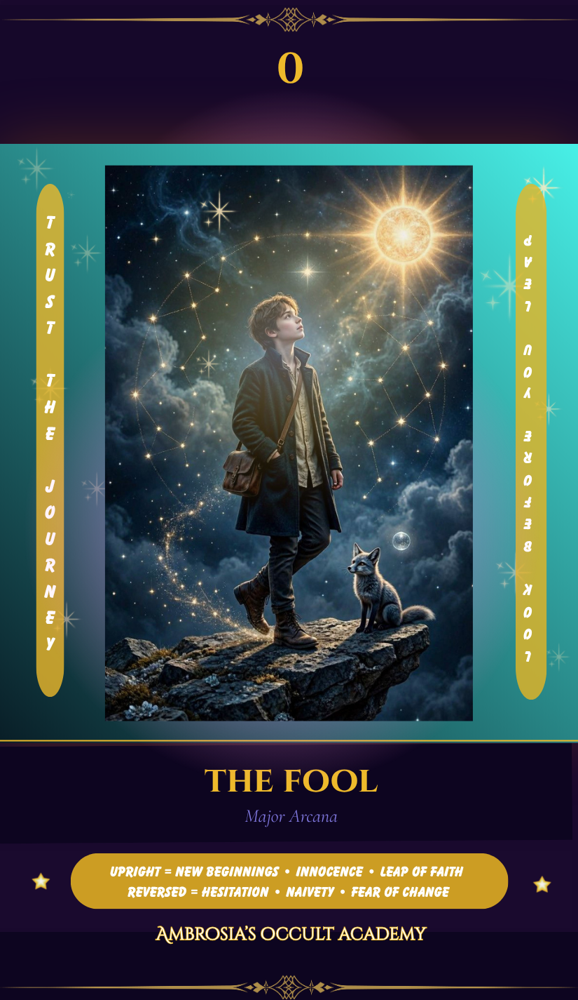
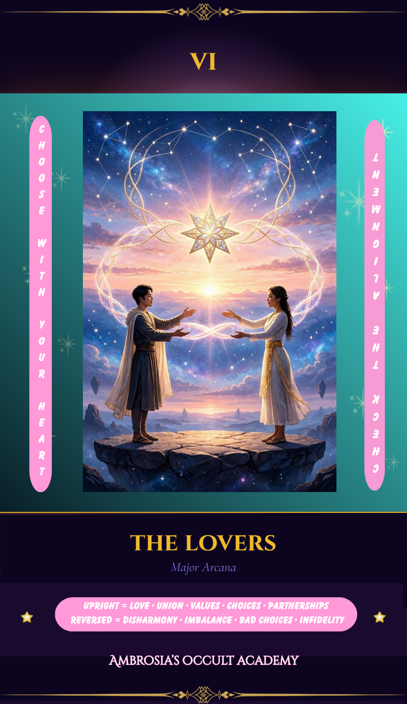
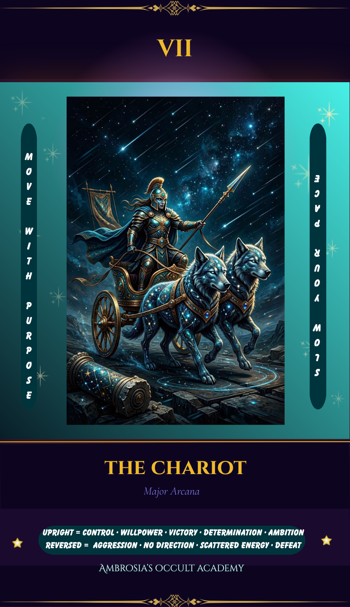
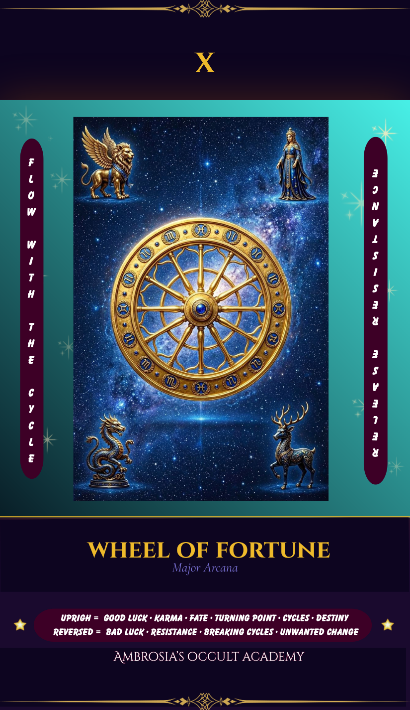
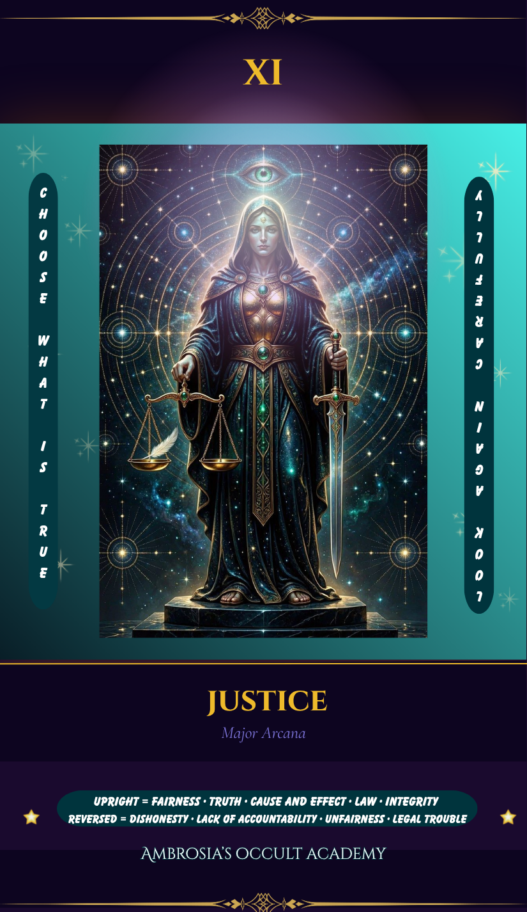
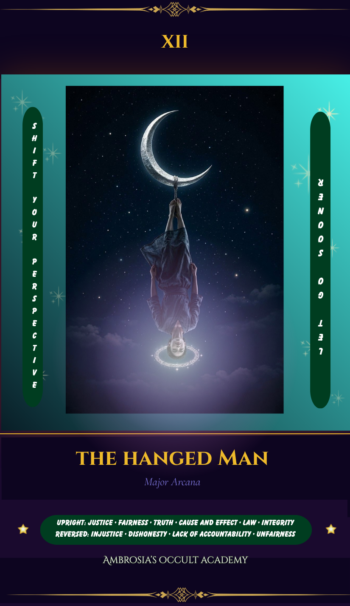
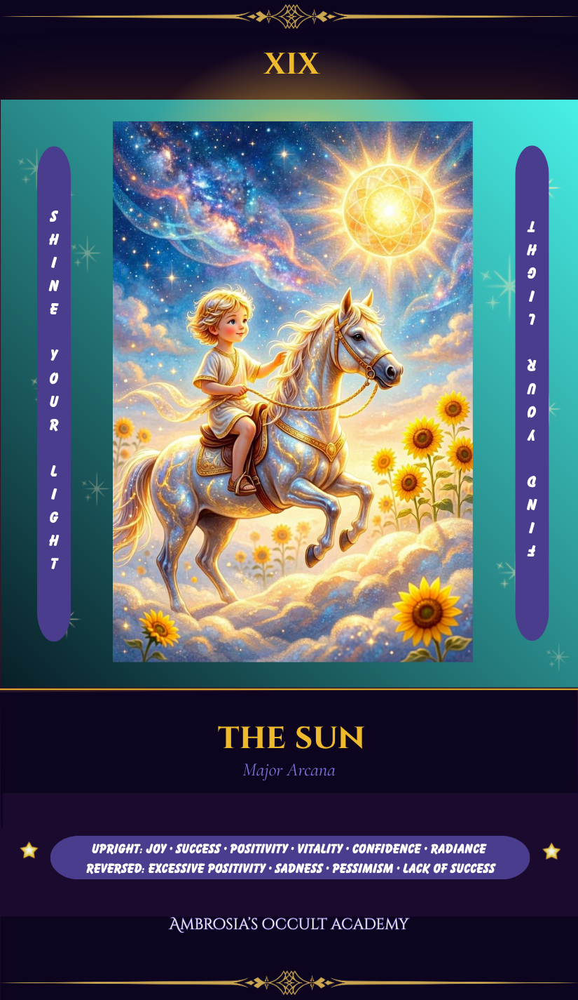

🌙 The Major Arcana — A Quick Reference
The 22 cards of the Major Arcana represent the big themes and archetypal forces of human experience. When these cards appear in a reading, pay attention — they carry more weight than the Minor Arcana and often signal significant life events or soul-level lessons.

The Fool
Upright: New beginnings, leaps of faith, innocence, pure potential.
Reversed: Hesitation, recklessness, fear of the unknown.

The Magician
Upright: Willpower, manifestation, resourcefulness — you have all the tools.
Reversed: Manipulation, scattered energy, unused potential.
The High Priestess
Upright: Intuition, mystery, subconscious wisdom.
Reversed: Blocked intuition, secrets, ignoring your inner voice.

The Empress
Upright: Abundance, creativity, nurturing, growth.
Reversed: Creative block, dependence, neglecting self‑care.

The Emperor
Upright: Structure, authority, discipline, leadership.
Reversed: Control issues, rigidity, power struggles.

The Hierophant
Upright: Tradition, spiritual mentorship, established systems.
Reversed: Rebellion, breaking tradition, questioning beliefs.

The Lovers
Upright: Love, alignment, meaningful choices.
Reversed: Misalignment, disharmony, difficult decisions.

The Chariot
Upright: Determination, willpower, victory through focus.
Reversed: Lack of direction, obstacles, losing momentum.

Strength
Upright: Inner courage, compassion, gentle power.
Reversed: Self‑doubt, insecurity, feeling overwhelmed.

The Hermit
Upright: Introspection, solitude, inner guidance.
Reversed: Isolation, withdrawal, ignoring wisdom.

Wheel of Fortune
Upright: Cycles, destiny, turning points.
Reversed: Resistance to change, bad timing, setbacks.

Justice
Upright: Truth, fairness, accountability.
Reversed: Dishonesty, imbalance, unfairness.

The Hanged Man
Upright: Surrender, new perspective, pause.
Reversed: Stagnation, resistance, indecision.

Death
Upright: Transformation, endings, rebirth.
Reversed: Fear of change, holding on, stagnation.

Temperance
Upright: Balance, patience, harmony.
Reversed: Excess, imbalance, impatience.

The Devil
Upright: Shadow work, attachment, temptation.
Reversed: Breaking free, reclaiming power, release.

The Tower
Upright: Upheaval, revelation, sudden change.
Reversed: Avoiding disaster, fear of change, internal collapse.

The Star
Upright: Hope, healing, renewal.
Reversed: Doubt, discouragement, loss of faith.

The Moon
Upright: Intuition, illusion, subconscious depths.
Reversed: Clarity emerging, releasing fear, truth revealed.

The Sun
Upright: Joy, vitality, success.
Reversed: Temporary sadness, burnout, unrealistic expectations.

Judgement
Upright: Awakening, rebirth, calling.
Reversed: Self‑doubt, avoidance, ignoring the call.

The World
Upright: Completion, wholeness, achievement.
Reversed: Delays, unfinished business, lack of closure.
🕯️ How to Start Reading Tarot
You don't need years of study or a special gift to read tarot. You need curiosity, a willingness to trust yourself, and consistent practice. This is where to begin.
-
1
Choose a deck that speaks to you visually
Don't start with a deck because someone told you it's the "right" one. Pick up the Rider-Waite-Smith if you want the most widely referenced imagery, or choose based purely on what draws your eye. Your relationship with your deck matters. The Rider-Waite is recommended for beginners because most learning resources reference its imagery directly.
-
2
Start with the Major Arcana only
Pull the 22 Major Arcana cards out of the deck and work with just those for the first few weeks. They represent the core themes of human experience and learning them first gives you a powerful foundation before adding the 56 Minor Arcana cards.
-
3
Pull a daily card every morning
Before you check your phone, shuffle your deck, ask "What do I need to know today?" and pull one card. Look at the imagery. What do you notice? How does it feel? Don't look up the meaning first — sit with your own impression. Then check it against a reference. This builds intuition faster than memorization alone.
-
4
Keep a tarot journal
Write down the card you pulled, what you felt when you saw it, your interpretation, and what actually happened during the day. Reviewing your journal after a few weeks reveals patterns and builds an incredibly personalized understanding of how each card speaks specifically to you.
-
5
Learn the suits and their elements
Wands (Fire — passion, drive, creativity), Cups (Water — emotion, relationships, intuition), Swords (Air — thought, communication, conflict), Pentacles (Earth — money, body, material world). Once you feel these four energies, you can interpret any Minor Arcana card even if you've never studied it before.
-
6
Read for yourself before others
Practice on yourself until reading feels natural. When you do read for friends, tell them you're learning. Most people are generous and appreciative with students. Your confidence will build with every reading you give, even the imperfect ones — especially the imperfect ones.
Ready for a Full Personal Reading?
If you'd like Jennifer to read for you personally — a full spread interpreted for your specific question or situation — emailed readings are available for $9.95.